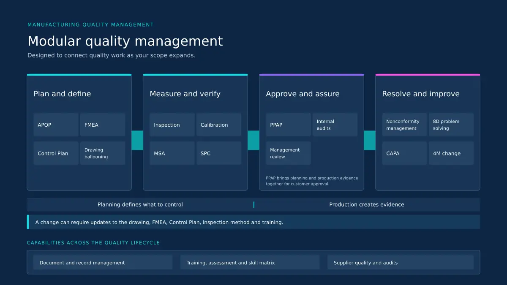
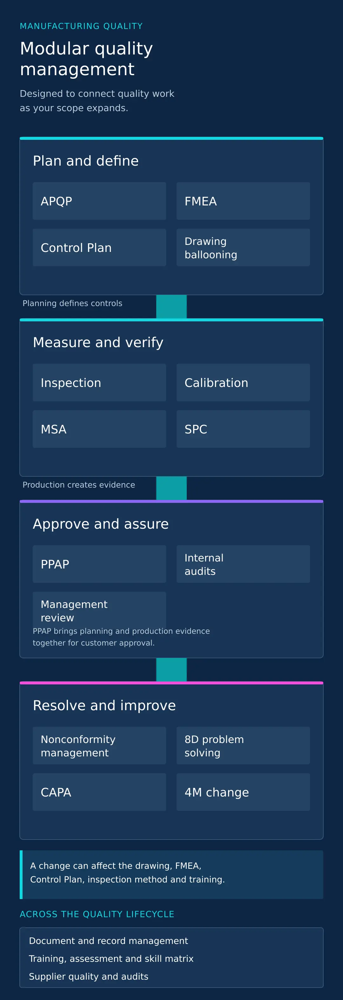

When a result changes, the whole story matters
An inspection result can point back to a drawing revision, a measuring system, a process change or an operator qualification. A supplier finding can affect an approved material. A corrective action can require a new control or work instruction. When that context sits across separate spreadsheets and folders, quality teams spend valuable time reconstructing what happened before they can decide what to do next.
Artisans QMS is organised around the relationships between requirements, risks, controls, evidence, people and decisions.
Keep the current requirement and the evidence together
Manage the review, approval, revision and distribution of quality documents, including drawings, specifications, procedures, work instructions, forms and customer requirements. Retain the records that show what was done, by whom and against which approved revision.
Assign role and process training, assess understanding and practical ability, and maintain an organisational skill matrix. See where employees are trained, assessed and qualified for specific operations, inspections and quality responsibilities. Completion of training and demonstrated competence remain distinct.
Build quality into the plan
Coordinate the activities, responsibilities and evidence needed for product and process readiness. Document product and process risks through FMEA and track the actions needed to address them.
Define product and process characteristics, control methods, sampling frequency and reaction plans. Identify and number drawing characteristics so requirements can be carried into inspection planning and reviewed for coverage.
Organise the required submission elements and supporting evidence for customer review of production part approval. Give teams a clear view of what is ready, what needs review and what is still outstanding.


Know what was checked and whether the process is holding
Inspection
Plan and record incoming, in-process and final inspections against defined requirements. Review results, exceptions and reports with the relevant drawing and process context.
Calibration and MSA
Manage equipment and gauge registers, calibration schedules, internal and external calibration records, reminders and reports. Use Measurement System Analysis to evaluate whether a measurement process is suitable for its intended use.
SPC
Monitor process measurements over time to identify signals that require investigation. Give quality and production teams the information needed to respond before variation becomes a repeated defect.
Supplier quality and audits
Plan supplier audits, document findings and track actions. Keep supplier quality evidence accessible to the teams making sourcing, incoming inspection and production decisions.
Close the issue and examine what must change
Record nonconformities, containment and disposition. Investigate causes, assign corrective or preventive actions and verify their effectiveness. Use 8D when a structured, cross-functional problem-solving response is needed.
Assess changes to people, machines, materials and methods before implementation. Review the possible effect on process risks, controls, inspection, training and customer requirements, then retain the approval and validation evidence.
Plan and record internal audits, findings and follow-up. Bring quality performance, recurring issues and open actions into management review so improvement is guided by evidence.
One change can touch many parts of the system
Consider a revised work instruction. The new document needs approval. The change may affect the FMEA, Control Plan or inspection method. The people performing the work may need training and reassessment. Later, an audit or customer question may require the organisation to show which revision applied and when.
Artisans QMS is designed to make those relationships visible, so teams can follow a requirement from planning to production evidence and from an issue to a verified action.
needs attention now
A manufacturer may begin with calibration and inspection. Another may begin with drawing ballooning, supplier audits or quality training. The modular structure lets teams establish the workflows they need first and extend the system across planning, production and improvement over time.
Bring us a real quality workflow
Show us a drawing, a control plan, a calibration process or an issue your team is working through. We will walk through the relevant QMS capabilities and how they fit your operation.
Document and record management for drawings, specifications and quality records
Control plans and FMEA linked to inspection planning and drawing requirements
Inspection and calibration with equipment registers and measurement system analysis
Corrective actions and 8D with verified root cause and effectiveness review